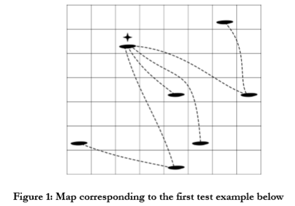

“The land of a thousand islands” was an official motto of Croatian tourism in the mid nineteen-nineties. While the motto is technically inaccurate (there are slightly more than $1000$ islands in Croatia), it is true that island hopping (sailing from island to island) is a popular summer activity.
For the purpose of this task, the map of the Adriatic sea is a grid consisting of unit squares organized into $2500$ rows and $2500$ columns. Rows are numbered $1$ through $2500$, north to south, while columns are numbered $1$ through $2500$, west to east. There are $N$ islands in the sea, numbered $1$ through $N$ and each island is located inside some unit square of the grid. The location of island $K$ is given by the coordinates of the corresponding grid square – its row number $R_K$ and its column number $C_K$. Finally, no two islands have the same location.

Due to winds and sea currents, it is possible to sail directly from an island only to those islands that are located in the general northwest or southeast directions. More precisely, it is possible to sail from island $A$ to island $B$ in one hop if either both $R_A < R_B$ and $C_A < C_B$ hold or both $R_A > R_B$ and $C_A > C_B$ hold. Note that the distance between the two islands or the presence of other islands between them does not affect the possibility of hopping from one to the other. If it is not possible to hop directly from $A$ to $B$, it might be possible to sail from $A$ to $B$ via other islands using some sequence of hops. The sailing distance from $A$ to $B$ is defined as the smallest number of hops required to sail from $A$ to $B$.
For example, in the figure above, starting from the island at row $2$, column $3$, we can hop to four other islands while the sailing distance to the remaining two islands is two.
TASK
A sailing congress is being planned and the organizers are considering each of the islands as a possible location for the congress. When considering a candidate island they would like to know: if every other island sends a single sailboat, what is the smallest total number of hops required in order for all sailboats to reach the candidate island, or equivalently, what is the sum of sailing distances from all other islands to the candidate island. Write a program that will, given the locations of $N$ islands, for each island $K$, calculate the sum of sailing distances from all other islands to island $K$.
Test data will be such that, for all islands $A$ and $B$ it is possible to sail from $A$ to $B$ using some sequence of hops.
 Comet OJ
Comet OJ